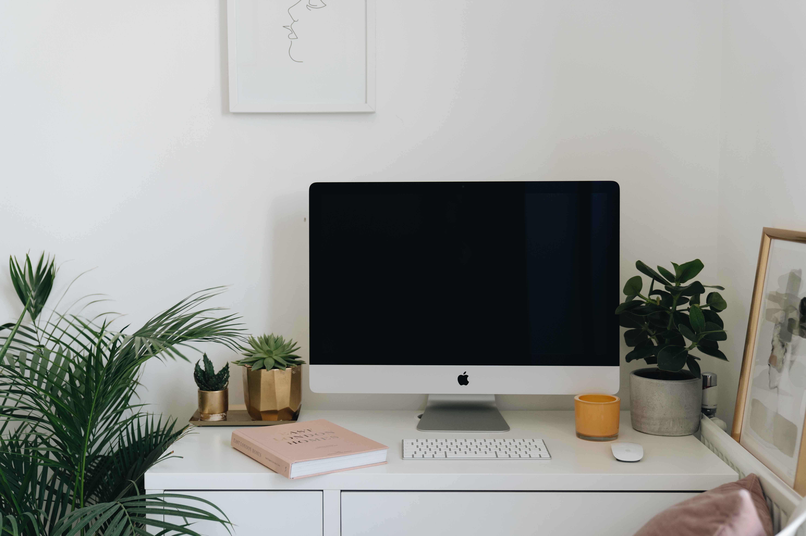
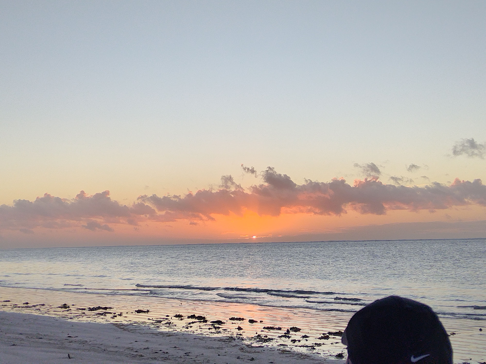
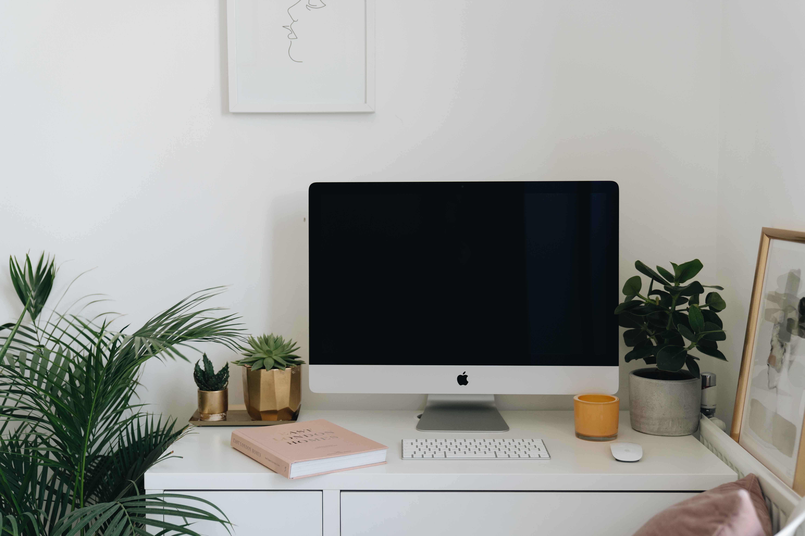
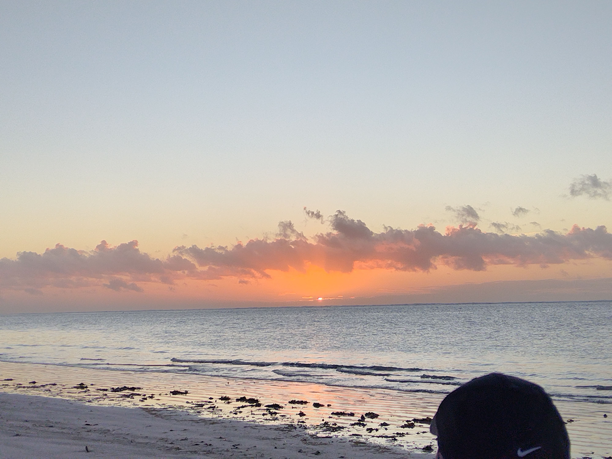

From retrenched during COVID (and expecting my third child) to Fractional COO helping mission-driven founders scale.
When I lost my job in 2020, fear and uncertainty hit hard. But instead of shutting down, I bet on myself. I started on Upwork as a virtual assistant, leaned on my background in operations, and invested every early dollar into becoming a Certified Asana Workflow Strategist.
My first client taught me hard lessons about boundaries. I reset, refined, and returned sharper—building long-term partnerships instead of one-off gigs.
Today, I design systems that let visionary founders breathe:
- Workflows that keep teams accountable without micromanagement
- Automations that save hours and reduce noise
- Investor-ready backends that free leaders to focus on vision
Clients describe me as perceptive, proactive, and quietly confident—someone who brings structure without chaos and clarity without control.
If you value both precision and partnership, you’ll feel at home here.


 


